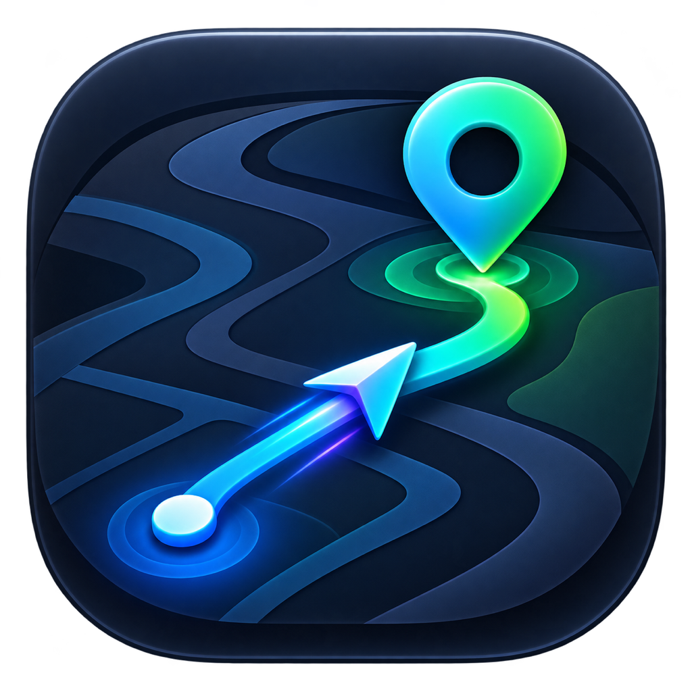

Mac
- 下載官方 DMG 安裝檔。
- 開啟 DMG，將 iloader 拖進「應用程式」。
- 從「應用程式」開啟 iloader。

RingoFly安裝與使用指南 遇到問題IPHONE · 快速上手
先裝工具，再安裝 App。照下方步驟完成配對與連線，就能使用收藏、金盆、路線及搖桿。
開始之前
在電腦操作
iloader 會用你的 Apple 帳號，將 IPA 簽署後裝進 iPhone。
下載來源：iloader 官方網站。Windows 10 ARM 與 32 位元系統不適用；其他平台見官方準備說明。
確認是上方官方下載的檔案後，到「系統設定 → 隱私權與安全性」，找到被阻擋的 App，依畫面選「強制打開／仍要打開」。如果沒有這個選項，請查看 Apple 開啟 App 說明。
在 iPhone 操作
LocalDevVPN 用於連接手機內的裝置服務。官方工具準備說明
電腦安裝 · 手機確認
私人專案：請先註冊 GitHub 帳號，將帳號名稱提供給 Ringo；收到並接受邀請後，登入下載。下載 Assets 內的 .ipa；「Source code」是原始碼，不是手機安裝檔。
iloader 官方安裝工具 · 手機信任與開發者模式操作參考
SideStore 不是必要工具。它讓你用手機重新簽署 RingoFly；免費 Apple 帳號仍是七天有效期。完整安裝方式在下方「SideStore 手機續期」。
只需要這支手機的配對檔
pairingFile.plist。按鈕及匯出方式：iloader 官方介面與配對檔實作。
在 iPhone 操作
先完成首次 DDI 下載，再用 App 的「4G 離線啟動」引導：
先完成一次定位與恢復
25.0330, 121.5654。拖動地圖只是選點。暫停路線或退出搖桿會停在模擬位置；回到真實位置請用返回箭頭。
下方「收藏」→ ＋ → 填名稱、座標與分類 → 儲存。經緯度可一起貼上。
點清單地點回地圖，再按開始模擬定位。向左滑動可編輯、刪除。
下方「金盆」→ 選盆栽或明信片 → 點名稱或座標前往。
拉取後勾選右側方框，留下自己的拉取時間。可重複拉的地點到期回到未拉，上次時間仍保留。
下方「路線」→ ＋ → 選沿道路或自行設定多點 → 儲存。
清單按「開始」，在預覽選速度與圈數，再開始移動。常用路線可從 ⋯ 置頂。
下方「搖桿」→ 等待定位準備 → 調整速度 → 拖曳圓形控制器。
上北、下南、左西、右東。放開停住；退出仍保持目前位置。
KML 需包含路線資料（LineString 或 Track）；只有地標的檔案不適用。KMZ 請先解壓取得 KML。
收藏與金盆清單頂部可篩選分類，並選新到舊、舊到新、名稱首字、距離近到遠或原清單順序。距離排序以目前位置計算，必要時更新目前位置。
右上 ⋯ 可管理分類與調整順序。金盆可按活動／地點分組；已拉過會排在後面，尚未開始的活動會標示未開始。
收藏右上 ⋯ → 批次匯入，選整理好的 UTF-8 CSV 或支援的 JSON，確認預覽後匯入。Excel 請另存「CSV UTF-8」，不直接匯入 XLSX。
第一次匯入先用「合併」保留現有清單。更新已有地點請確認匯入模式；選「取代」前先保留完整檔案。
需要時再設定
共享清單僅由管理者維護。其他使用者可查看與使用，沒有新增、編輯、刪除、匯出或發布共享清單的選項。你勾選的已拉紀錄屬於個人，不會發布給其他人。
未到期的從原到期日延長；已到期的從今天起算。已撤銷的碼不能延長，需另建新碼。接收者右側 ⋯ 可編輯名稱；展開「已撤銷」可刪除紀錄，不影響個人備份。這些管理選項只有管理者可見。
Apple 密碼與驗證碼只在官方安裝工具輸入，不需提供給 Ringo。配對檔只交給自己的手機使用；匯入後，請將「檔案」App 或電腦裡不需要的副本移除。
同步網址與個人存取碼請向 Ringo 取得，勿改用陌生人提供的網址；存取碼只分享給本人。撤銷會停止後續共享同步，已下載的離線清單與既有 Google 個人備份仍可能保留。
Google 用於確認身分，雲端保存帳號識別、電子郵件、收藏名稱與座標、分類及已拉時間；不會備份 Apple 密碼、配對檔或持續的即時定位。資料依帳號分隔，服務維護者仍具資料庫管理權限；建議不要把私密地點存入雲端備份。
兩種方式，自行選擇
免費 Apple 帳號的簽署有效期是七天。續期會重新簽署；更新則是安裝新版 IPA。
| 方式 | 如何續期 | 適合誰 |
|---|---|---|
| iloader | 接電腦，重新匯入 IPA 覆蓋安裝 | 想少裝一個工具 |
| SideStore（選用） | 手機接 Wi-Fi、開 VPN，按重新整理 | 想直接在手機續期 |
RingoFly 設定 → 版本與更新可查看目前安裝版本與線上最新版本，按更新日誌查看功能與修正。有新版時按「前往 GitHub 最新版本」，下載 IPA 後覆蓋安裝。
需要第一次用電腦安裝；之後可以在手機重新整理簽署。仍須七天續期，背景續期可能失敗，請每週確認剩餘天數。
七天有效期：Apple 開發者帳號說明。
卡在哪裡，找對應項目
此專案保留私人。請先註冊 GitHub 帳號，將帳號名稱提供給 Ringo，收到並接受專案邀請後，登入受邀帳號。進入最新版本頁後，在 Assets 找 .ipa；若維護者尚未發布版本或上傳 IPA，請等維護者完成發布。
解鎖 iPhone、確認已信任電腦，拔插 USB，改用可傳資料的線及另一個 USB 埠。Windows 先確認 iTunes 能看見手機；仍無法辨識時，依官方準備說明改試 Apple Devices。
先完成 IPA 安裝，再到「設定 → 一般 → VPN 與裝置管理」信任自己的開發者帳號。之後查看「隱私權與安全性 → 開發者模式」，依提示重啟並確認啟用。
用最新版 iloader、USB 連接並解鎖同一支 iPhone，重新匯出配對檔後匯入。請選完整的 PLIST 檔，不要改內容或使用其他手機的檔案。系統更新、重置或檔案失效後，可能需重新配對。
確認 Wi-Fi 有網路、LocalDevVPN 已連線。第一次 DDI 下載需要時間，保持 App 開啟；若顯示失敗，再按「重試連線」。其他 VPN 可能干擾，先中斷再用 LocalDevVPN。
先等清除指令完成，再到 Apple 地圖按目前位置確認。收到新的真實定位可能需要等待；若 RingoFly 顯示尚未確認恢復，保持 VPN 連線並依提示重試。畫面停止不等於 GPS 已恢復。
先保留 App，使用原帳號與相同 App 識別重新簽署覆蓋安裝。若 SideStore 本身也過期，接回電腦，用 iloader 覆蓋安裝 SideStore，再完成重新整理與 RingoFly 續期。
有背景重新整理機制，但會受網路、VPN 與 iOS 背景排程影響。每週主動打開 My Apps，看 SideStore 與 RingoFly 的剩餘天數，才知道有沒有續期成功。
官方提供公開原始碼，不需越獄。開源不等於零風險；它需要處理 Apple 登入與簽署資料。只從官方下載，保留雙重認證，不分享配對檔。官方 FAQ 亦說明舊版 Anisette 登入驗證服務可能造成帳號鎖定；遇到問題依官方指引處理。
查看 SideStore 官方 FAQ登入後會切到帳號的私人資料。到「Google 帳號與個人備份」按「加入手機原本的資料」合併，再等同步成功。未登入時的原資料仍保留在手機，登出可以回到那份資料。
原手機須先登入 Google、加入手機原本的資料，並完成雲端同步。新手機使用同一 Google 帳號；配對檔需要為新手機另外建立。已存路線目前不包含在 Google 個人備份。